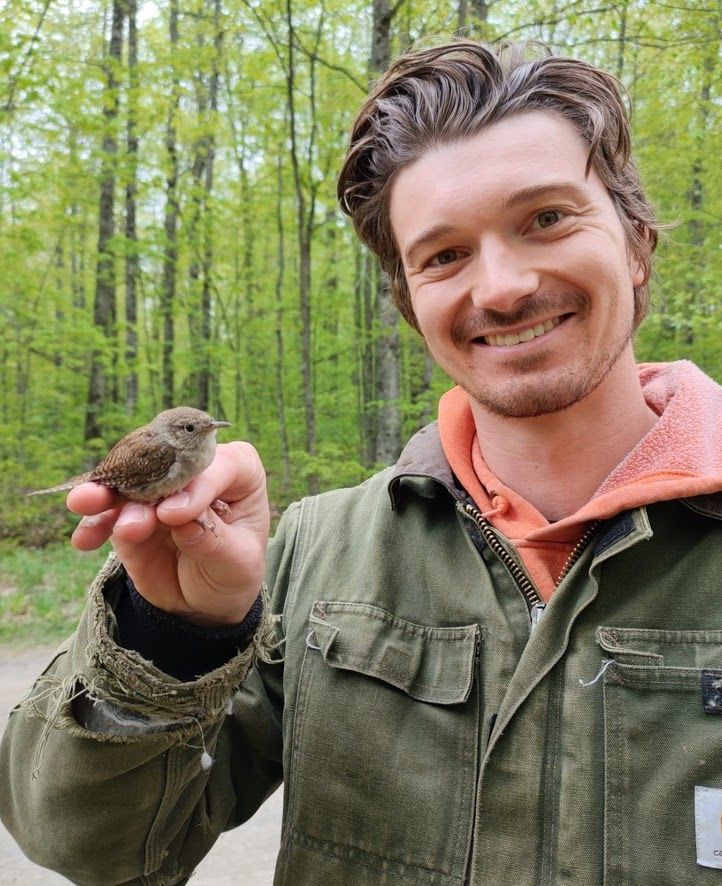
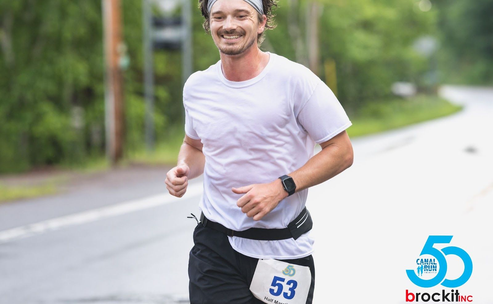
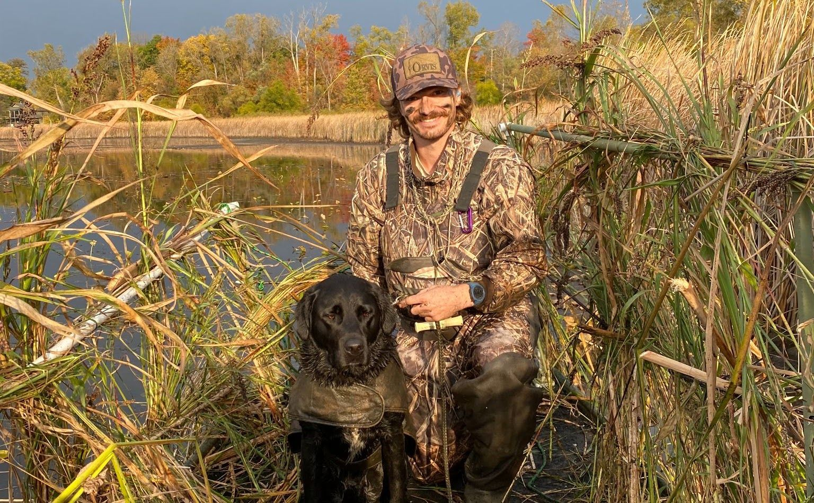
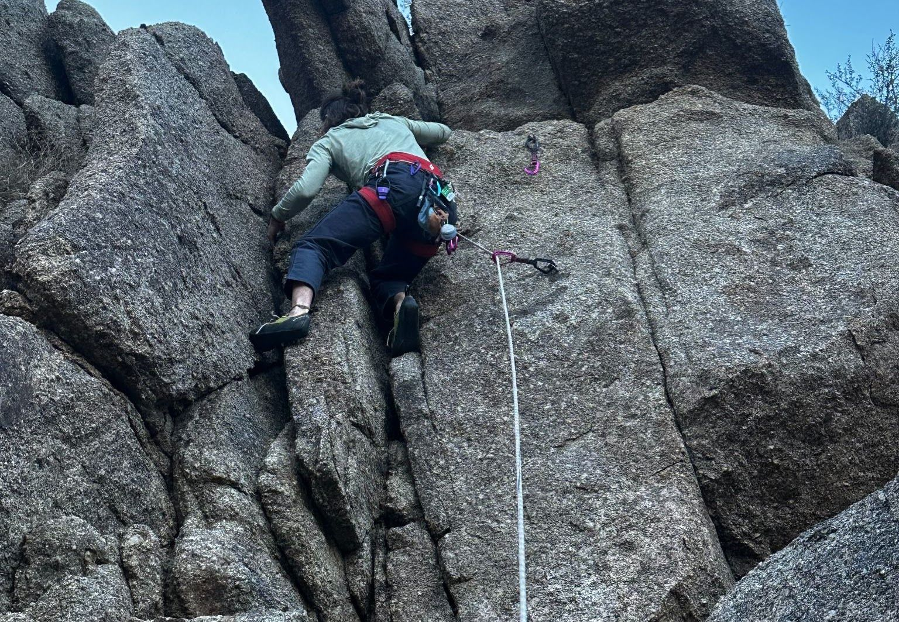
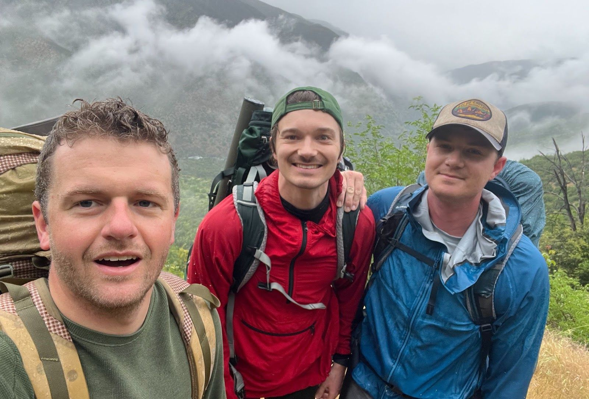
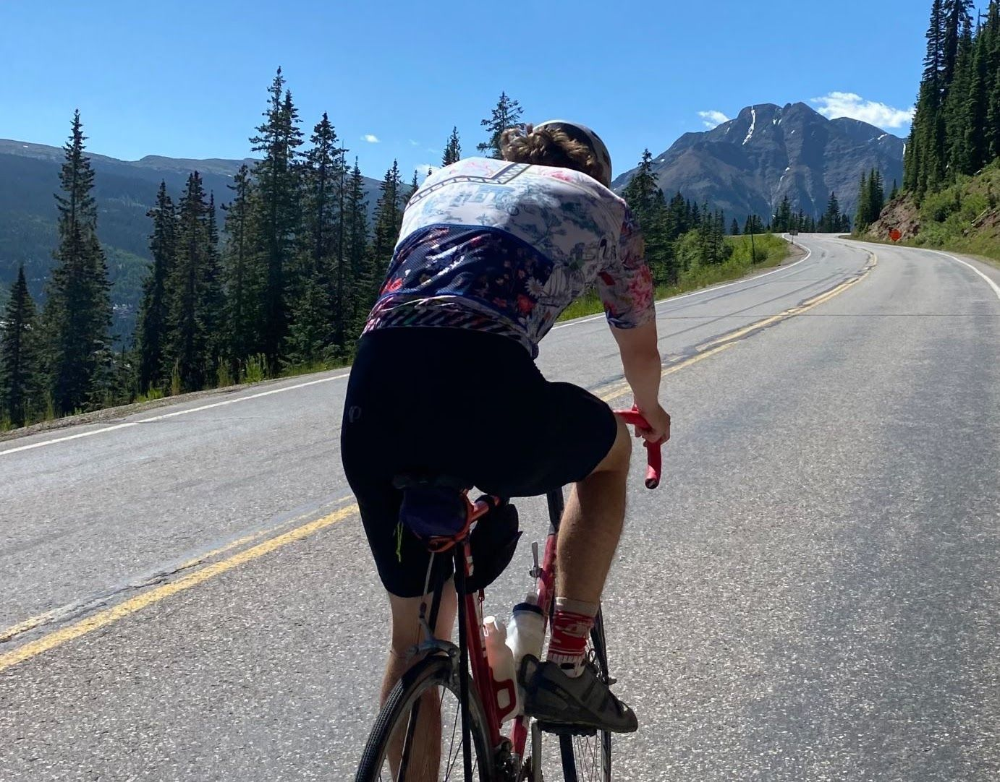
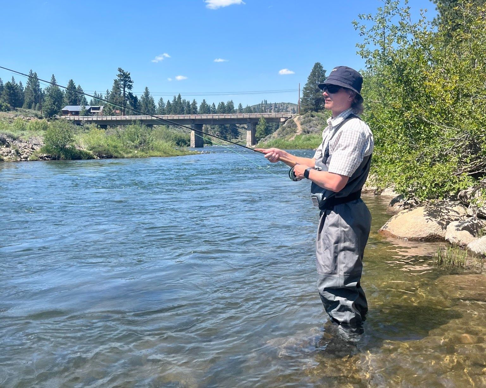

About
Hi, I'm Tanner.

Field ecologist, first.
I am a PhD candidate in the College of Forest Resources and Environmental Science at Michigan Technological University, advised by Dr. Jared Wolfe. My research combines winter fieldwork in abandoned mines with Bayesian modeling to understand how hibernaculum microclimate shapes the recovery of bats after white-nose syndrome.
I earned my B.S. in Wildlife Ecology and Management at Michigan Tech, then an M.S. studying the genetics of a coyote population carrying red wolf ancestry on Galveston Island, Texas. Between degrees I worked for the U.S. Fish and Wildlife Service monitoring invasive carp in northern Illinois, before returning to Michigan Tech in 2024.
I work closely with the Michigan Department of Natural Resources, and I care most about research that a manager can put to use.
Outside the mines
When I'm not underground
Most of my free time is spent outside in the Upper Peninsula and beyond.





